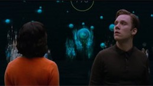
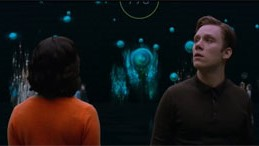

SINOPSIS
Frank y Amy son instruidos a un sistema de inteligencia artificial, el cual busca recopilar datos y progresos de los usuarios a lo largo de numerosas relaciones, con el objetivo de coincidir con su compatible.
De acuerdo con el tiempo especificado, los protagonistas se reasignan a pares, Frank tiene un año con su pareja, y Amy 9 meses con la suya. Cuando la relación de Amy expira, es asignada a una cadena de relaciones cortas cada vez más insignificantes. En cambio Frank, enseguida es alternado con Amy una vez más.
Esta vez prometen no verificar el tiempo de caducidad de la relación, lo cual Frank, no pudo cumplir. Su “observación unilateral” del tiempo ha modificado su relación con Amy en períodos de tiempo cada vez más cortos, que próximamente desencadenaría el fin de la relación.
Luego de otra serie de relaciones amorosas, se les informa que su pareja definitiva se ha detectado y para despedirse, los dos usuarios se encuentran en el restaurante del Hub y poco después, comienzan a dudar de la lógica del sistema.
Al escapar y llegar a la gran muralla, una negrura pixelada lo cubre todo, haciendo referencia a un tipo de simulación. Ambos usuarios se encuentran en un espacio virtual con el número “99,8” por encima, rodeados por cientos de parejas idénticas a ellos mismos, también numerados.
En el “mundo real”, se revela que el sistema y sus simulaciones formaban parte del algoritmo de una aplicación de citas en línea o mejor dicho, una “playlist de relaciones”, ya que la aplicación en sus teléfonos coincide con Amy y Frank en la realidad junto con 99.8% de certeza. Suena de fondo «Hang the DJ» de The Smiths y Amy comienza a acercarse a Frank.
Imágenes del capítulo

 
